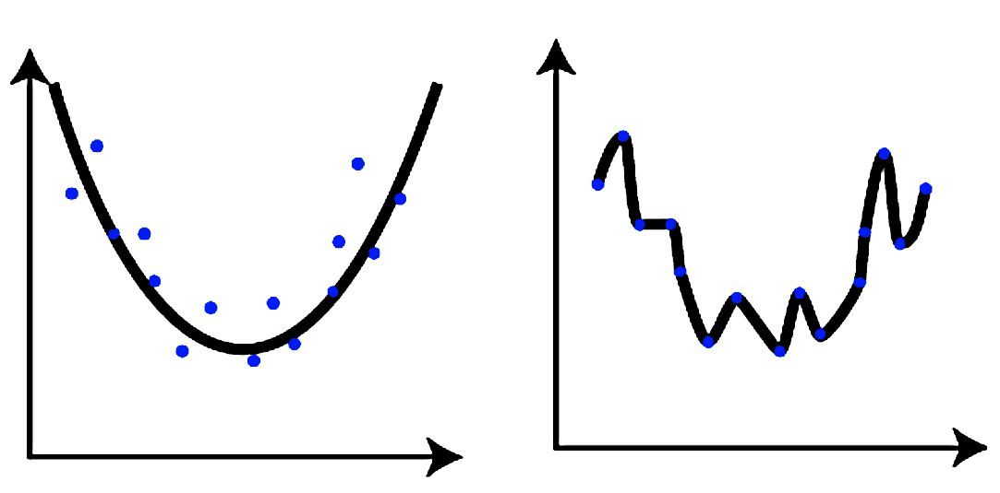
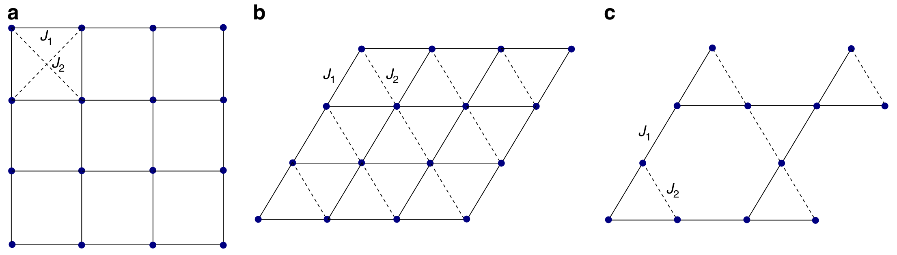
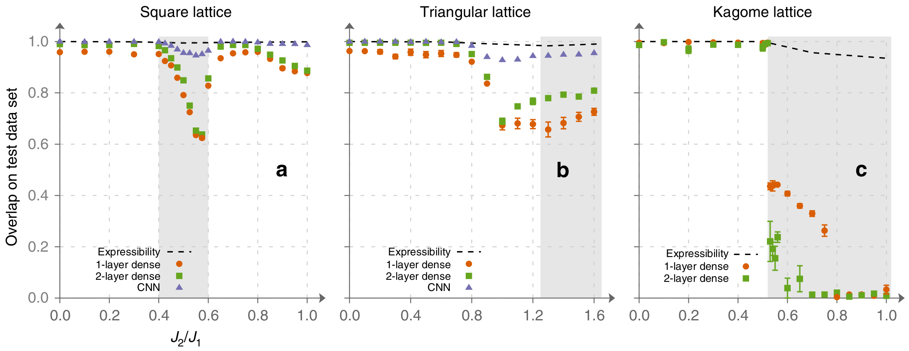
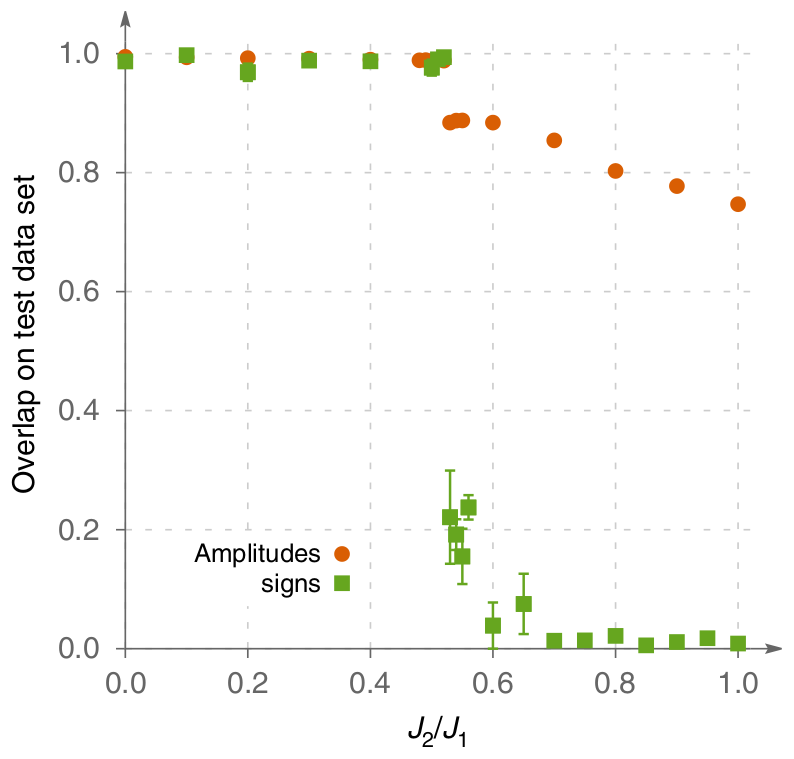
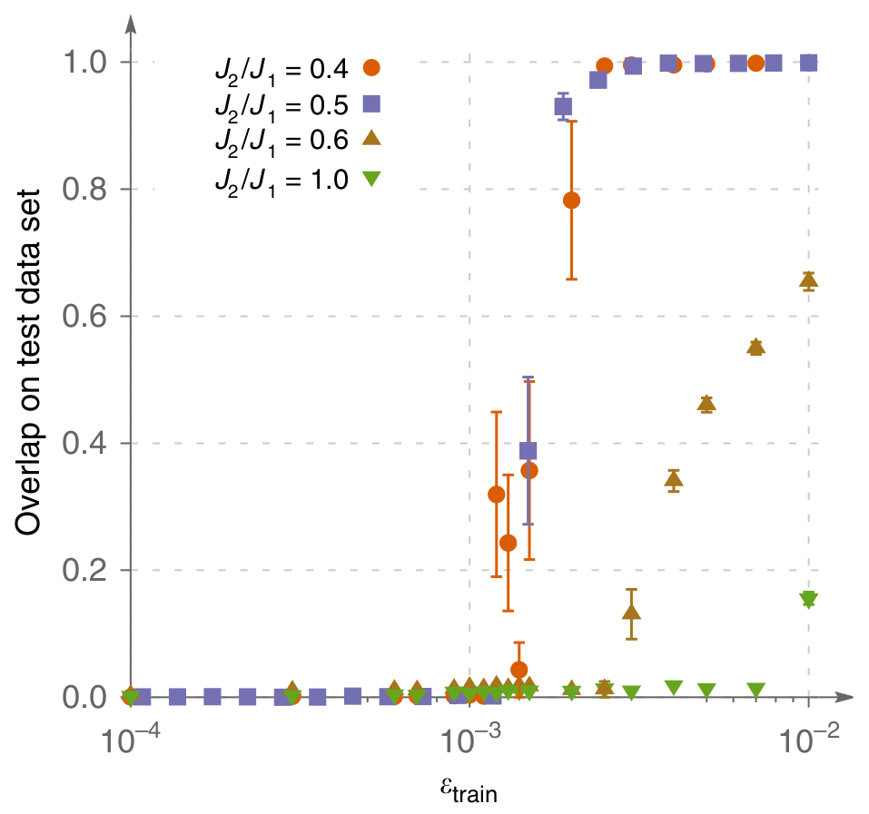

- Basic concepts
- Experimental setup
- Results
- Conclusions and outlook
Expressibility & Generalization

Expressibility is the ability
of a neural network to accurately represent data.
Generalization is the ability
of a neural network to correctly predict results on samples which
were not included in the training dataset.
Sampling
Obtain $|\psi\rangle$ with exact diagonalization
\[ |\psi\rangle = \sum_i \psi_i |\sigma_i\rangle \]
$|\psi_i|^2$ forms a discrete probability distribution
Sample exactly from it
(no Monte Carlo, no ergodicity issues)
$\varepsilon_{\text{train}}$
training dataset
$1 - \varepsilon_{\text{train}}$
everything else (test dataset)
Physical systems

$$\hat H = J_1 \sum\limits_{\langle a, b \rangle}
\boldsymbol{\sigma}_a \otimes \boldsymbol{\sigma}_b
+ J_2 \sum\limits_{\langle \langle a, b \rangle \rangle}
\boldsymbol{\sigma}_a \otimes \boldsymbol{\sigma}_b$$
- $J_2/J_1$ allows us to tune frustration
- Periodic clusters of 24, 30, 32, or 36 spins
Training
Use two neural networks to represent $|\psi\rangle$:
- "amplitude network" predicts $\log(|\psi_i|)$
regression task; minimize MSE or maximize overlap
- "sign network" predicts $\text{sign}(\psi_i)$
binary classification task; minimize cross-entropy
Sign structure generalization

- 24 site clusters
- $\varepsilon_\text{train} \approx 10^{-2}$
Amplitudes vs Signs

Kagome lattice
Sign structure is much harder to learn!
More data?

Kagome lattice
There exists a critical $\varepsilon_\text{train}$ necessary to
learn the sign structure
Critical training dataset size and system size scaling
What does it have to do with SR? and limiting case -- expressibility